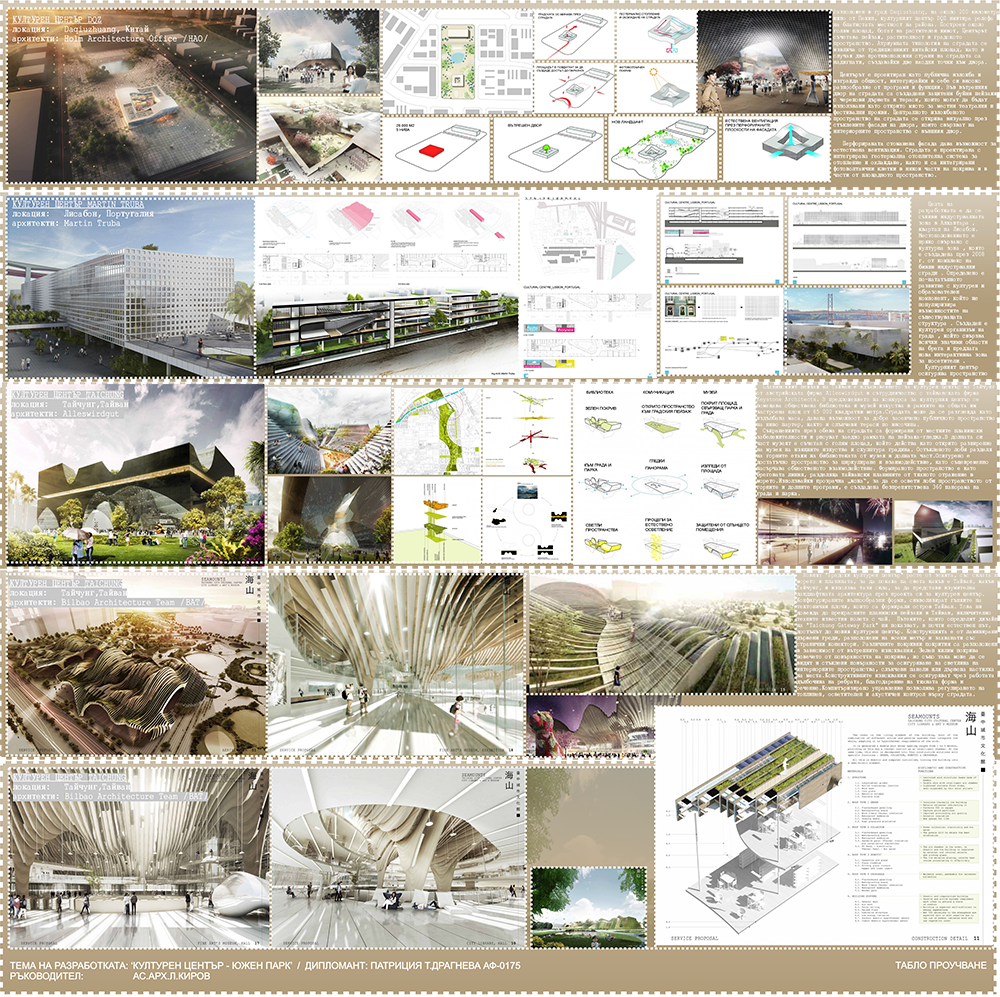
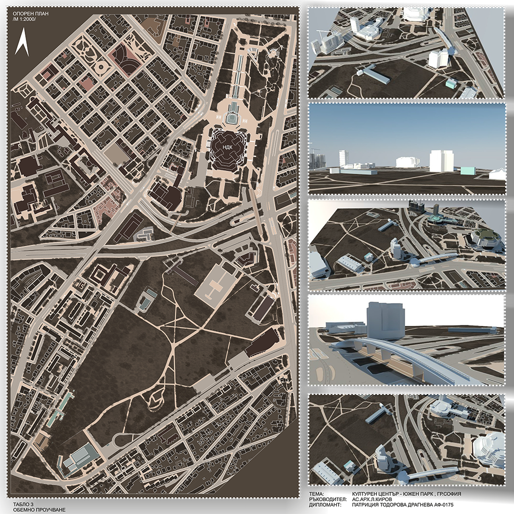
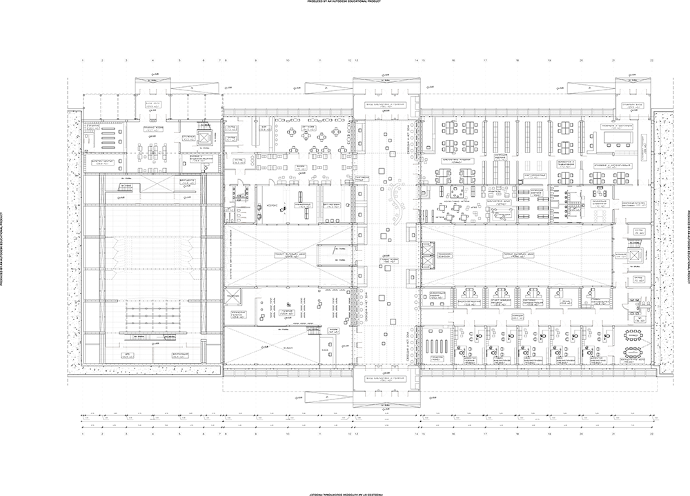
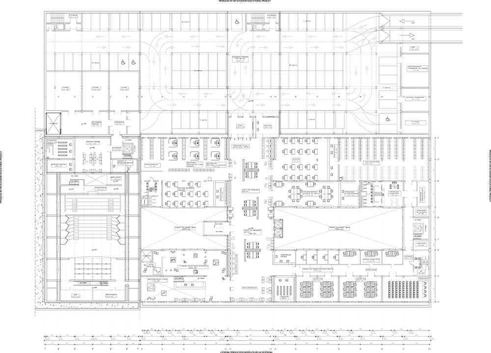
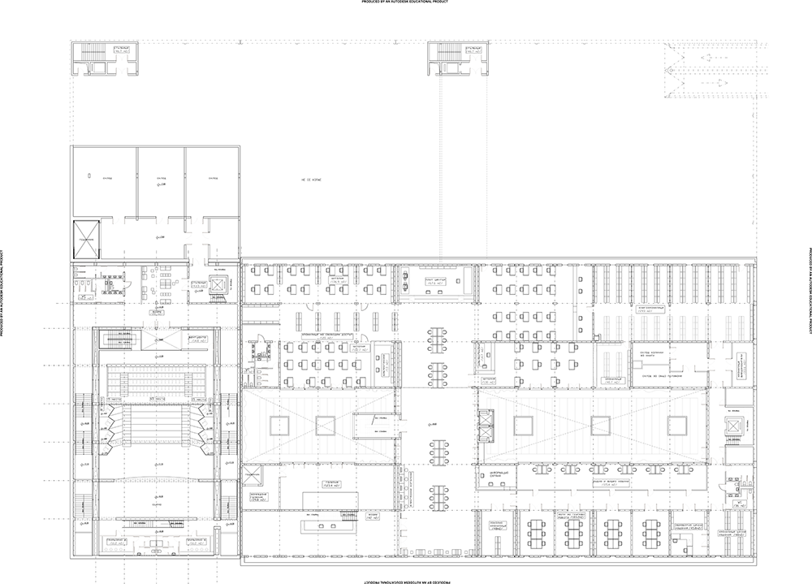
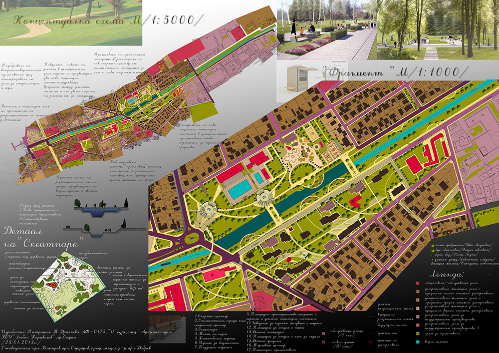
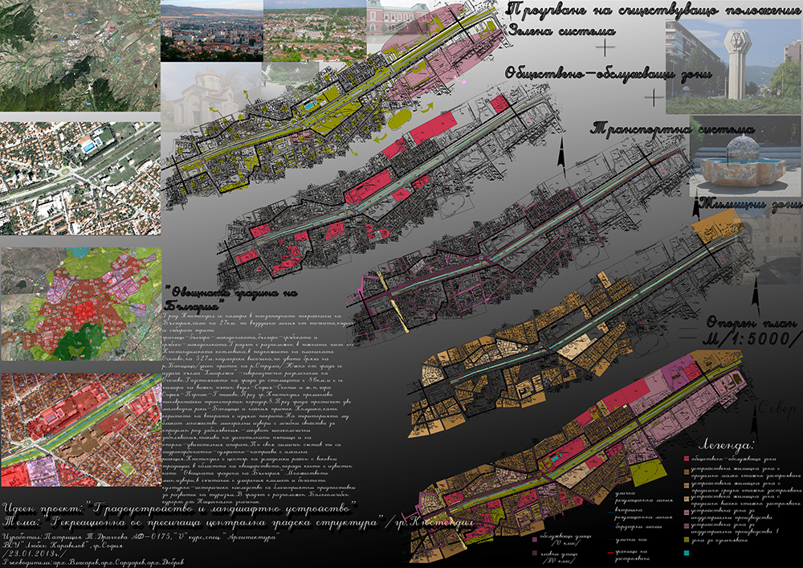

About
 Born: 23.03.1990, Sofia, Bulgaria
Born: 23.03.1990, Sofia, Bulgaria
Education:
[2003-2008г.]
High School of Mathematics "Atanas Radev", Yambol, Bulgaria
[2008-2016]
Higher School of Civil Engineering VSU “Lyuben Karavelov”, Sofia
Basic skills acquired during my studies:
- Solving complex tasks of different nature, applying the basic principles of architecture: constructive endurance, aesthetics, functionality and economy
- Creation of graphic and spatial design (skills for presenting the idea through graphic and vector images, elaboration of town planning analyzes and volume-planning solutions, interior design of furniture and spaces, facade design of building and volume of buildings)
- Skills for working with software for:
• Graphics: Photoshop
• Drawing of vector graphics: Corel Draw
• Virtual drawing on tablet: Corel Paint
• just drawing: Paintings /oil on canvas mostly/
• digital drawing of projects: Autocad; Sketchup, 3ds Max, Revit, Archicad
Background
Acoustic Waves LTD
[01/08 / 2012 - now ]
/architect/technical designer/
• Technical design of an acoustic threatement solutions. Design of sound recording studios.
• Acoustic treatment of enclosed rooms, listening rooms, professional sound recording studios and nightclubs. Design of acoustic wall and ceiling panels, ballast structures, slot-resonator structures, etc.
• Realizied projects in Bulgaria, Sweden and England
EnergyDesign LTD
[16/08/2016 - 20/03/2017]
/architect/
• Preparation and completion of documentation for participation in public procurement under the Public Procurement Act
• Capturing via drawings of an existing buildings and facilities /part "Energy Efficiency"/
• Preparation of projects part "Architecture" in the conceptual and technical phase of buildings with residential and public functions
Ten Architects LTD
[01/06/2013 - 01/09/2013]
/trainee architect/
• Concept design for public buildings and public spaces
• Taking part in competitive architectural projects in Bulgaria and Warsaw
• Graphic design of an 'architectural language' via pictograms using 'Corel Draw'
Design philosophy
It is important for me to do both meaningful and beautiful things at once, and I believe that both are inextricably linked, no matter what task is to be solved.
GO UPContacts
GSM: +359 889 190 323 [13:00 - 18:00 h] :)
GO UPProject 1

Project 2

GO UP
GO UP
GO UP
GO UP
GO UP
GO UPProject 3

GO UP